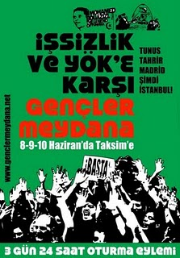

|
|
اعتراض جوانان ترکیه در میدان تاکسیم : تونس ، تحرير ، مادريد و اينک استانبول ...
جمعه20 خرداد 1390

تغییر برای برابری -
چندی پیش جوانان ترکیه با انتشار اطلاعیه ی برگزاری تظاهرات در روزهای هشتم تا دهم ژوئن در ميدان تاکسيم شهر استانبول Tunisia,Tahrir,Madrid now İstanbul اعلام کردند که همچون مردم جهان که با رهبری نسل جوان در خاور ميانه ، آفريقای شمالی، اروپا، شيلی و اسپانيا و .. برخاسته اند، روزهای هشتم ، نهم و دهم ژوئن چند روز قبل از انتخابات عمومی مجلس ترکيه برای اخطار به حکومت در ميدان تاکسيم شهر استانبول تظاهرات و مقاومتی را به نمایش در خواهند آورد. این تظاهرات در اعتراض به بیکاری و وضعیت نظام آموزشی در ترکیه خواهد بود.
در بخشی از فراخوان فرياد حق طلبانه آنها آمده است :
تونس ، تحرير ، مادريد و اينک استانبول ...
برای اعتراض به شورای آموزش عالی
جوانان در ميادين مبارزه خواهند بود ! در تونس جوانانی که با معضل بيکاری روبرو بودند در ميدان مبارزه حضور يافتند . در سوريه نيز جوانانی که آزادی می خواستند در ميدان مبارزه حضور يافتند . در اسپانيا هم در ميدان مادريد جوانان در ميدان مبارزه هستند .
حکومتی که خيال ميکرد مردم را گول ميزند ولی در واقع خودش را گول ميزند و همچنين احزاب راست که دم از چپ بودن ميزنند را مردم با مبارزه شان به زانو درآوردند . چرا منتظريم ؟ هم اينک نيز نوبت ماست . آنها بما ميگويند : "هرچقدر بيشتر کار کنيد همانقدر زودتر به آينده ای بهتر خواهيد رسيد" . ما ميدانيم که هيچ يک از چيزهايی که اينها ميگويند واقعيت نيست . کار ميکنيم اما حاصلی برايمان ندارد ! حاصلی برايمان ندارد !
ما جوانان برای کنکور درس ميخوانيم ، اما حکومت با يک حيله برای کنکور يک رمز گذاشته و با اين طريق از ورود ما به دانشگاه جلوگيری ميکنند . ميخواهيم معلم شويم ، توسط آزمون استخدام دولتی که مانند کنکور دانشگاه است مانع استخدام بخش بزرگی از فارغ التحصيلان دانشگاه ميشوند . مدرکی نمانده که نگرفته باشيم ، زبان خارجه باقی نمانده که ياد نگرفته باشيم ، دوره آموزشی نمانده که نگذرانده باشيم ، اما باز هم بيکار می مانيم .
حاصل اين حکومت تنها بيکاری و فقری است که بر تمام ما روا شده . آيا با پيشنهادات ، پروژه های غير منطقی و دروغهای آنها موافقيد ؟
وقتی جوانان به اين موضوع عکس العمل نشان می دهند وضعيت بدتر از اين که هست می شود . آنها در پاسخ به اعتراضات و تظاهرات جوانان با ماشين های آبپاش آب ميپاشند ، با باتوم به جوانان حمله ميکنند ، با گاز فلفل به آنها حمله ميکنند و با ماشينهای ضد شورش از روی جوانان رد می شوند . برای نمونه معلمی بنام متين لوکومجو را ميتوان نام برد . همين چند روز قبل حکومت با حمله به يک اعتراض سبب مرگ وی گرديد . هم اينک وقت آن رسيده که متوجه موقعيت زمانی مان شويم، هم اينک زمان آن فرا رسيده که به اين روند پايان دهيم .
اربابان جيبهايشان را با استفاده از آينده و فردای ما پر ميکنند !
آينده مان را از ما می دزدند و تنها ما هستيم که بايد آنها را متوقف کنيم . فردايمان را از کسانيکه برای آينده مان کنکور و رمز گذاشته اند ، کارمان را از کسانيکه کارمان را از دستمان گرفته اند و آينده مان را از آنها پس خواهيم گرفت . مانند تونس ، مانند ميدان تحرير ، مانند اسپانيا ، جوانان ترکيه نيز ميادين اعتراض و مبارزه را پر خواهند کرد . هشتم ، نهم و دهم ژوئن ميدان تاکسيم در شهر استانبول ازآن جوانان خواهد بود . ما جوانان ترکيه سه شبانه روز در اين ميدان خواهيم بود ....»
یکی از کاربران بالاترین آمده در گزارشی از تظاهرات و مقاومت جوانان ترکیه نوشته است :« جوانان ترکیه تقریبا از یک هفته قبل یک وب سایت با نام "جوانان به میدان" طراحی کرده و جوانان ترکیه را به شرکت در اعتراض به بیکاری ، سرکوب پلیس ، فقر ، انواع امتحانات ورودی دانشگاه و بطور کلی به اعتراض به سیستم سرمایه داری دعوت کردند.سازماندهی این تظاهرات شبیه به سازماندهی تظاهرات مادرید است . سازماندهی این اعتراض از چهار روز قبل آغاز شد . با توجه به فصل امتحانات در دانشگاهها ، دانشجویان و جوانان از چند شهر ترکیه به محل اعتراض آمدند و از امروز ساعت دوازده ظهر در هوای تقریبا گرم شهر استانبول در قلب میدان تاکسیم آغاز به برگزاری یک تظاهرات نشسته کردند . حضور پرحجم نیروهای پلیس در میدان تاکسیم و خیابانهای اطراف بوضوح دیده میشود . نیروهای ضد شورش از حدود ساعت یازده صبح امروز رفته رفته افزایش یافته اند . در ابتدا پلیس سعی بر متفرق کردن جوانان با بهانه های مختلف کرد اما موفق نشد . تلویزیون های مختلف در اخبار ظهر این تظاهرات را بصورت مستقیم پخش کردند . در این میان نکته ی قابل توجه اینست که مردمی که از آنجا میگذرند به تشویق جوانان میپردازند ، در کنار آنها مدتی می نشینند و آنها را به هر طریق ممکن حمایت می کنند . گروه های موزیک خیابانی به محل تجمع می آیند و با اجرای موزیک و ترانه سرودهای انقلابی حمایت خود را اعلام می دارند . در این بین یک گیتاریست و خواننده ی زن عرب نیز با اجرای موزیک و شعرهای انقلابی بزبان عربی در کنار جوانان بود و حمایت و همبستگی اش را اعلام نمود . در میان این جوانان چند جوان اسپانیایی نیز برای همبستگی با این جوانان در تظاهرات شرکت دارند . مردم مختلف کشورهای دیگر نیز گاها به کنار جوانان آمده ، در کنار آنها نشسته و اعلام همبستگی مینمایند . این اعتراض با حضور هفتاد نفر آغاز شد و ظرف دو ساعت به حدود یکصد نفر افزایش یافت . جوانان از شهرهای مختلف توسط فیس بوک و تویتر ارتباط برقرار کرده و به طرف شهر استانبول حرکت میکنند . پیامهای حمایت و همبستگی از این تظاهرات از کشورهای مختلف ، از جمله دانشجویان سوسیالیست دانشگاههای ایران ، کانون دوستداران کارگران سوسیالیست سوئد ، پورتال افغانستان آزاد ، آزاد افغانستان ، انجمن کارگران افغانستان و ... ارسال شده که بزبان ترکی ترجمه و در محل تظاهرات خوانده شده است .»